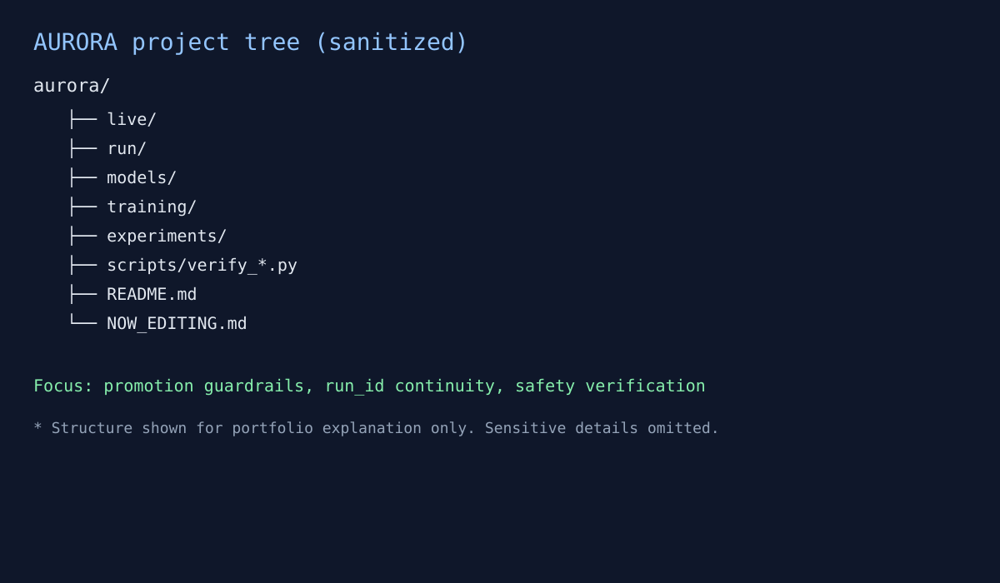

민감정보를 제외한 운영·데이터·검증 중심 요약
모델 실험 결과를 실서비스로 옮길 때 가장 큰 리스크는 “성능 수치만 믿고 운영 전환”하는 구간입니다. AURORA는 이 구간을 줄이기 위해, 실험·검증·운영을 분리하고 승격 조건을 명시하는 데 집중했습니다.
※ 민감한 원본 데이터 크기/정확한 거래·자본 지표/운영 키 값은 보안상 공개하지 않습니다.

AURORA에서의 핵심은 “잘 맞는 모델”보다 “안전하게 운영되는 시스템”입니다. PM/운영 관점에서 실험-검증-승격-회복까지 닫힌 루프를 만드는 것이 실제 성과로 이어진다는 점을 검증했습니다.